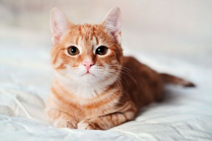
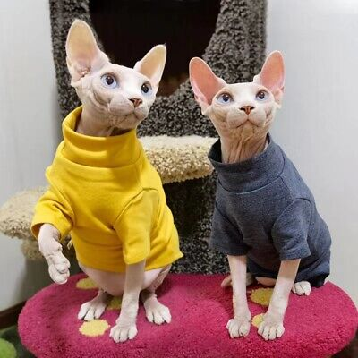

Cats
Cats are my favorite animal because they are so cute. Ironically, I am severely allergic to cats.
Cute Cat Pictures
This orange cat is very cute. He is looking very intently at the camera.
This kitten is so adorable and fluffy.
Unpopular opinion but I love hairless cats. These ones above are so cute in their matching sweaters.
Here is a video of even more cute cats!